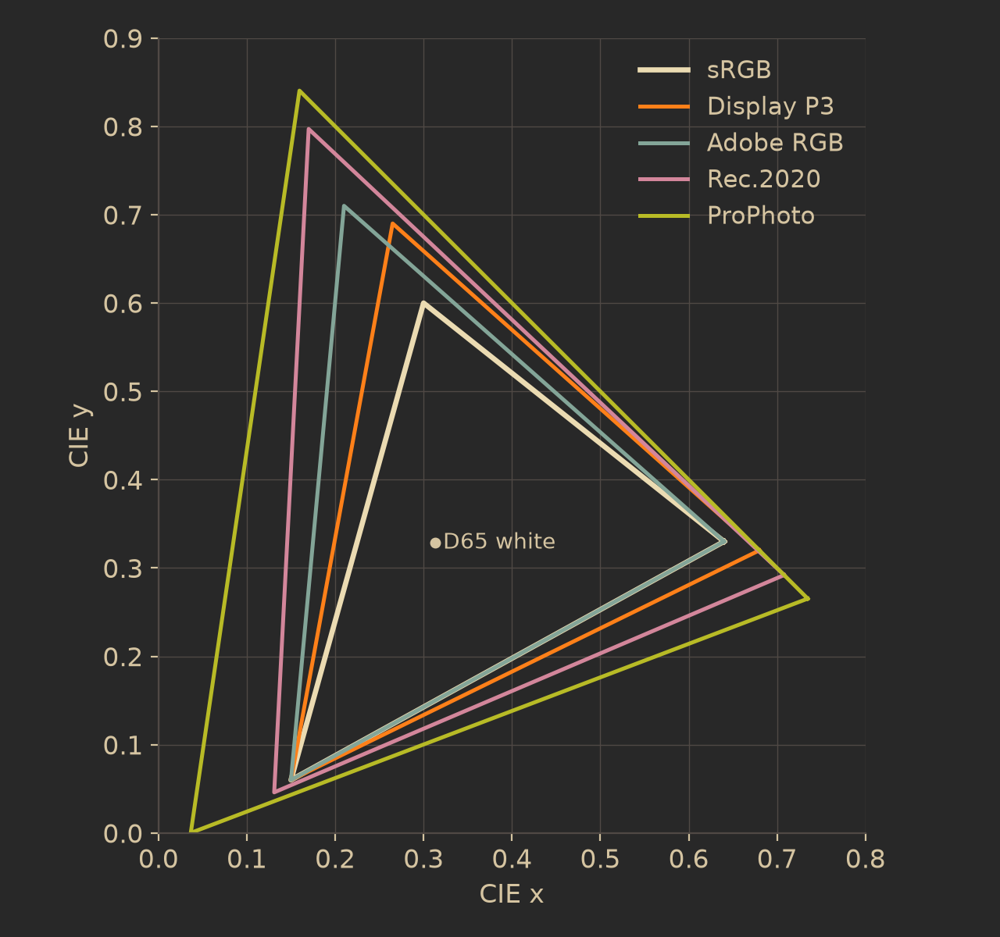
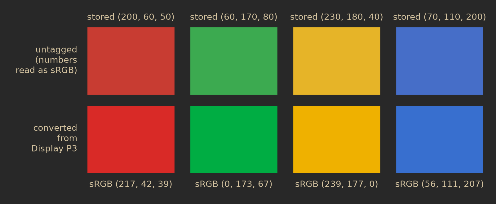

Color and file formats
Every file Dalíca shows goes through the same path: a format module reads it into one decoded image, a single color stage turns that into 8-bit sRGB, and the orientation is applied. This chapter follows that path: color profiles, bit depth, orientation, which formats are read and written and how, and the limits that keep a huge or hostile file from taking the app down.
From file to pixels
A file's format is recognized from its first bytes, never from its name, so a .jpg that is really a PNG decodes as a PNG. Each format is one module with the same three entry points: a header read for scanning (size, orientation, EXIF fields, where an embedded thumbnail lies) that decodes no pixels; a decode into the decoded image; and the embedded thumbnail for the fast path. Everything is pure Rust; no C decoder is linked.
Color management
A pixel's numbers mean nothing until you know which red, green and blue they refer to. An embedded ICC profile says so. Dalíca's color stage reads it and converts the pixels to sRGB with moxcms, a pure-Rust color engine, using the relative colorimetric intent: colors inside sRGB keep their appearance, colors outside it are brought to its edge. Profile versions 2 and 4 are read; sRGB, Display P3, Adobe RGB, ProPhoto and Rec.2020 are recognized by name.

Where profiles come from
- JPEG: APP2
ICC_PROFILEchunks, reassembled only when every chunk carries the same count and the sequence numbers are exactly 1 to that count. Anything else is an unusable profile. - PNG: the
iCCPchunk. PNGgAMAandcHRMchunks without aniCCPprofile are not interpreted. - The others each use their own container: the TIFF page's ICC tag (34675), the WebP
ICCPchunk, the PSD profile resource, a GIFICCRGBG1application extension before the first frame, a BMP V5 header's profile, the JPEG XL profile stream, and HEIC's (with the decoder). A RAW preview tagged with a color space (Adobe RGB on some cameras) is converted to sRGB too.
Without a profile, and with a bad one
Untagged gray and RGB pixels are taken as sRGB, which is what nearly every camera and phone JPEG without a profile means. Untagged CMYK uses a naive conversion, R = (1 − C)(1 − K), G = (1 − M)(1 − K), B = (1 − Y)(1 − K). CMYK JPEGs with an Adobe APP14 segment store their samples inverted (255 means no ink) and are inverted back first; YCCK frames are converted from YCbCr to inverted CMY first.
A profile is unusable, and the pixels are shown as if untagged, when it is over 16 MiB (after APP2 reassembly or iCCP inflation), has more than 1,000 tags, has a tag table that runs past its data, declares more bytes than it has, describes another color space than the pixels (an RGB profile on a gray image), or when moxcms refuses it or fails on it. The fallback is logged. The profile is parsed and checked before any of its numbers are trusted, because a profile is file data like any other: hostile until proven otherwise.
The display, and View > Use Color Management
Dalíca treats your display as sRGB. Reading the real display profile from each operating system is later work, to be done without C dependencies. So on a wide-gamut monitor, colors are shown as sRGB values and the monitor's own handling of sRGB applies.
View > Use Color Management (on by default, kept in settings.json) maps to one decode option. Off, every embedded profile is ignored and every file is shown as untagged. The thumbnail cache keys include this setting, so both renderings are cached side by side: switching it off makes the visible cells again without profiles, and switching it back reads the managed thumbnails from the cache instead of decoding again.
Save and Export are always managed. The output pipeline decodes with the default options whatever the view setting, so a file Dalíca writes is always converted from its profile to sRGB. An sRGB profile is embedded in the new file only when the source had a profile; an untagged source gives an untagged output.
None of the sample photos used in this guide carries a profile, so the difference cannot be shown on one of them. What happens to a Display P3 photo shown without management is this: its numbers are read as if they were sRGB numbers, and since the sRGB primaries are less saturated than P3's, every saturated color comes out duller than intended.

Bit depth and color models
The decoded image keeps the file's own precision and model: 8- or 16-bit integers or floats, and gray, RGB or CMYK (palettes are expanded by the format module). The color stage works at that precision: 16-bit samples go through moxcms' 16-bit transform and are rounded to 8 bits once, at the end; float samples go through its float transform. It works in bands of rows, so its temporary buffers stay small. The transform kernels are chosen so every processor architecture computes the same pixels.
| Stage | Precision |
|---|---|
| Decoded image | the file's own: 8/16-bit integers or floats; gray, RGB or CMYK; straight alpha |
| Color stage | at the samples' precision; one rounding to 8 bits at the end |
| Thumbnails, viewer, edit view | 8-bit sRGB RGBA |
| Edit renderer | 32-bit floats per channel, sRGB-encoded 0 to 1; rounded to 8 bits after each run of fused pixel operations |
| Save of a JPEG | 8-bit baseline JPEG at the original's estimated quality and chroma subsampling (4:2:2 is written as 4:4:4) |
| Save of a 16-bit PNG | exactly 16-bit for a recipe of only rotations and flips (gray or RGB, no profile, not resized); any other edit is rendered at 8 bits and widened back to 16 |
| Grayscale sources | written back as gray while the edits leave every pixel neutral |
So the place where 16-bit precision is lost is the color stage's final rounding: editing in Dalíca is 8-bit in, float in the middle, 8-bit out. The same 8-bit sRGB picture serves the thumbnail ladder, the viewer, the edit view and every effect. A rotate-only Save of an untagged 16-bit PNG stays bit-exact because it never enters that path: its samples are moved pixel for pixel at their own precision.
Not read at all: 12-bit JPEG (no pure-Rust decoder of 12-bit DCT samples was found that Dalíca could use), arithmetic-coded, lossless and hierarchical JPEG frames, and Lab and YCbCr TIFF pages. They are listed with their size and show a tile saying the kind of file is not supported.
Orientation
Cameras usually store pixels the way the sensor read them and write the way to hold the picture into EXIF tag 0x0112. Dalíca applies it on every read, so the decoded picture is upright. That upright picture is the stored frame every crop, retouch point, effect centre and face rectangle is measured in. Dalíca's own rotate(…), flip_h() and flip_v() entries are applied on top of it, last in the renderer, pixel for pixel. Files are never rewritten just to fix their orientation.
A photo whose EXIF is damaged still shows, upright as stored, and the header read records why. HEIC files carry their own rotation and mirror boxes (irot, imir), read from the container in the order the item lists them; JPEG XL's orientation is applied by its decoder.
Lossless rotation on Save
A Save normally renders the recipe and writes the file with orientation 1 (top-left). When the recipe holds only rotations and flips and the file is a JPEG, re-encoding would cost quality for nothing, so Dalíca transforms the JPEG's quantized DCT coefficients instead and never decodes the pixels:
- Mirroring an 8 × 8 block left to right negates its coefficients of odd horizontal frequency; top to bottom, those of odd vertical frequency; transposing a block transposes its coefficients. Any of the eight orientations is a combination of these, applied to every block and to the block layout.
- The quantization tables are the file's own, never requantized: copied, or transposed entry by entry for the transforms that transpose (orientations 5 to 8, the quarter turns), so every coefficient keeps its own quantizer. New optimal Huffman tables are built for the new data. Other segments are copied byte for byte.
- Baseline and extended sequential Huffman files with 8-bit samples and any sampling factors take this path. It is refused, and the EXIF orientation flag is updated instead (the pixel data left as it is), for progressive, arithmetic-coded, 12-bit, lossless and hierarchical files; for a transform that would move a partial block row or column from the right or bottom edge to the leading edge (the decoder would show its padding); and for files with data after the end-of-image marker, such as MPF secondary images, whose offsets and orientation would go stale.
The format table
"JPEG copy beside it" means a Save of a format Dalíca cannot write in place writes name.jpg (or name-001.jpg, the next free number) next to the source and leaves the source byte-identical. The copy is a new, unedited photo with the source's caption, tags and star, transparency drawn over white; the source keeps its edits.
| Format | Shown | Thumbnail fast path | Metadata written | Save edits |
|---|---|---|---|---|
| JPEG | baseline, progressive, CMYK/YCCK, 8-bit samples | embedded EXIF thumbnail; the full decode fitted (past 64 MP, the EXIF thumbnail) | XMP, IPTC, EXIF | in place, as a baseline JPEG; rotate-only Saves lossless where possible |
| PNG | 1 to 16-bit, palette, transparency, interlaced | scaled decode | XMP (iTXt), EXIF (eXIf) | in place without transparency (8 or 16-bit); with transparency a JPEG copy beside it |
| TIFF | 8/16-bit integer, float; gray, RGB, CMYK, palette; LZW, Deflate, PackBits, JPEG; first full-resolution page | embedded thumbnail page, else the full decode fitted up to 64 MP, then the reduced decode (below) | XMP and IPTC tags (append-only) | JPEG copy beside it |
| WebP | lossy and lossless, alpha; first frame of animations | lossy without alpha: scaled decode at any size; others: full decode fitted up to 64 MP | XMP, EXIF chunks | JPEG copy beside it |
| GIF | first frame | scaled decode | sidecar only | JPEG copy beside it |
| BMP | yes | scaled decode | sidecar only | JPEG copy beside it |
| JPEG XL | yes | scaled decode | sidecar only | JPEG copy beside it |
| PSD / PSB | merged composite only (8/16/32-bit gray, RGB, CMYK, indexed); no layers | embedded thumbnail resource or composite | sidecar only | JPEG copy beside it |
| RAW | embedded preview only | embedded preview | .xmp sidecar when enabled | JPEG copy beside it, rendered from the preview |
| HEIC / HEIF | only in builds with the heif feature; otherwise listed with its size, date and orientation | none (its thumbnail is HEVC too) | sidecar only | JPEG copy beside it (with the feature); otherwise disabled |
| AVIF | no: recognized and listed with a format tile | none | sidecar only | disabled |
| Video (MP4, MOV, M4V, MKV) | poster frame; H.264 in every build, HEVC only with the hevc feature | none | sidecar only | never through the photo path |
A file the decoder refuses is still listed: its cell shows the embedded thumbnail if there is one, otherwise a caution mark with the reason ("Damaged file", "Too large to display (W × H)", the format's own text) and, where it helps, a hint on what to do. A damaged or truncated file decodes as far as it can and says so. Panics inside third-party decoders are caught and reported as a damaged file.
RAW: the embedded preview, and why
Dalíca recognizes raw files by content: CR3 by its ftyp brand; RAF, CRW, MRW and X3F by their signatures; CR2, ORF and RW2 by their variants of the TIFF header; and other TIFF-structured raws (DNG, NEF, ARW, PEF, SRW and more) by a bounded walk of their directories that finds a DNG tag or raw sensor data. It then shows the largest embedded JPEG preview it finds; the next smaller one is the thumbnail fast path. Previews over 64 MiB are passed over. A raw without a usable preview shows a generic tile.
The preview is what the camera itself rendered from the sensor data, with its own white balance, tone curve and color. Raw development is a different kind of tool, and Dalíca's product spec puts it out of scope: Dalíca organizes and makes simple edits, and the preview is a finished picture it can do that with. Edits apply to the preview, and Save writes a JPEG beside the raw at the preview's size. Open With sends the file to a raw developer. Metadata is read from the raw's EXIF and XMP and an .xmp sidecar, and written only to the sidecar. A RAW and JPEG pair with the same stem are two photos.
HEIC, HEVC and AVIF
HEIC photos are HEVC-coded pictures in an ISO container. Decoding HEVC needs a patent licence in some countries, so including a decoder is the distributor's decision, and the official Dalíca downloads leave it out. Their packages do not register HEIC or HEIF with the system. HEVC video is the same: the hevc feature is off in release builds, and such a clip says "This video can't be played (HEVC support isn't included in this build)".
Without the decoder a HEIC is still organized like any photo. Its header is read from the container in pure Rust, without touching HEVC: the primary item (pitm), its size (ispe), its rotation and mirror (irot, imir) and its EXIF item, capped at 4 MiB with entry lists capped at 65,536. So it is listed with its size and capture date, sorts and searches by date, and shows a tile saying "HEIC support isn't included in this build", with the hint that an iPhone can save new photos as JPEG (Settings › Camera › Formats › Most Compatible) or that the files can be converted.
If you build Dalíca yourself with cargo build -p dalica --features heif, HEIC decodes with heic-rs (pure Rust, no unsafe, MIT or Apache-2.0), pinned exactly at 0.1.1, through a wrapper that guards against its panics: single pictures and grids, 8 to 12 bits (10 and 12-bit decode to 16-bit), alpha, ICC, EXIF and XMP. Overlays, uncompressed items and 4:2:2 or 4:4:4 streams are refused with a tile text, never shown with wrong pixels. Measured on a set of 36 generated files, everything phones write decodes 46 to 71 dB from its source and a 1.2-megapixel grid decodes in about 30 ms. HEIF is read-only either way: writing it needs an HEVC encoder, and every mature one is C.
AVIF is recognized and never decoded, because no permissively licensed pure-Rust AV1 decoder exists today.
Decode limits
Every number in a file header is hostile until checked. Every decode takes one Limits value, checked against the header before any pixel buffer is allocated, and again after the orientation swaps width and height. Whichever limit is reached first applies; for large images it is usually the allocation limit.
| Limit | Value | Why |
|---|---|---|
| Width or height | 65,535 px for a full decode (JPEG's own maximum); 262,144 px for header reads | panoramas up to the JPEG maximum still open |
| Pixels for a full decode | 230 (about 1,074 MP) | covers stitched panoramas and medium-format files |
| Allocation per decode | 1.5 GiB by default, and never more than half the memory budget (a quarter of RAM, clamped to 256 MiB to 1.5 GiB) | one file can never take the whole budget |
| Thumbnail source from a decoder that cannot scale | 64 MP | such decoders allocate at full size before resizing |
| ICC profile | 16 MiB, 1,000 tags | a profile is parsed before its numbers are trusted |
| Embedded thumbnail or preview | 64 MiB |
Allocations are fallible (try_reserve), so running out of memory is a "too large" error on the photo's tile, never an abort. A file over a limit still shows its embedded preview if it has one. Container walks are bounded as well: TIFF directory chains (a seen-set against loops, a depth limit, a directory cap), XMP nesting and node counts, EXIF entry counts, ISO box nesting (12 deep and 4,096 boxes per level in the CR3 and video walks). Every parser has a fuzz target.
Large TIFFs, in strips and bands
Stitched panoramas are mostly TIFFs of 100 to 300 megapixels, larger than the 64 MP that a full decode for a thumbnail allows. So a large TIFF takes two paths of its own, under the same limits; nothing the size of the page is ever allocated for a thumbnail.
- Thumbnails and the viewer's pictures. Past 64 MP, when no reduced-resolution page covers the target, the page is decoded one strip or tile at a time and each is summed into the cells of a picture reduced by a whole factor (the largest that keeps the long side asked for). The cell means go through the color stage once and are fitted. A 261 MP 8-bit panorama's 256-pixel thumbnail holds about 13 MB besides the file. Strips and tiles, chunky and planar, 8/16/32-bit integers and 16/32/64-bit floats, gray, RGB, CMYK, YCbCr JPEG strips and alpha all take this path; palette pages and samples under 8 bits still answer "Too large to display".
- No whole read for a preview. The photo viewer reads a large TIFF from its file chunk by chunk, holding only the header and one chunk. A TIFF whose directory lies after the pixels, as many stitchers write it, is read whole (at most 1 GiB) and decoded the same way from memory.
- Zoom to 100 %. When a page's samples and its 8-bit output would not fit the allocation limit together, the page is decoded in bands of whole rows of at most 16 MiB of samples, each band going through the color stage into the output, so memory holds the output and one band. The edit view keeps a zoomed picture up to 1 GiB, so pages up to about 268 MP zoom to 100 %.
| Panorama (measured) | File | 256 px thumbnail | 2560 px picture | Full decode |
|---|---|---|---|---|
| 30 000 × 8 700 (261 MP), 8-bit RGB, Deflate strips, directory at the end | 19 MB | 1.2 s, 50 MB | 1.2 s, 92 MB | 1.5 s, 1.1 GB (bands) |
| 24 576 × 4 500 (111 MP), 16-bit RGB, Deflate tiles | 267 MB | 2.3 s, 1.3 MB | 2.4 s, 42 MB | 2.3 s, 811 MB (bands) |
| 20 000 × 5 000 (100 MP), 8-bit RGB, uncompressed strips | 300 MB | 0.25 s, 1.9 MB | 0.32 s, 56 MB | 0.38 s, 1.0 GB |
Release build, one thread, procedural panoramas; memory is the measured heap peak. Before this path all three answered "Too large to display" for every thumbnail. Other large formats (a PNG, a JPEG or a PSD composite over 64 MP without an embedded thumbnail) still get "Too large to display" for their thumbnail; each needs a reduced path of its own.
In the code
crates/image/src/color.rs: the color stage, profile checks and fallbacks.crates/image/src/decode.rs: the decoded image model andDecodeOptions::color_managed.crates/image/src/limits.rs:Limitsand the allocationBudget.crates/image/src/orient.rsandcrates/image/src/jpeg_transform.rs: EXIF orientation and lossless JPEG transforms.crates/image/src/formats/: one module per format, including the HEIF container reader and the RAW preview walk.crates/create/src/output.rs: the output pipeline used by Save and Export.crates/engine/src/thumbs.rsandcrates/engine/src/cmd/view.rs: View > Use Color Management.docs/formats.md(all sections);docs/architecture.md§6;docs/data-model.md§6.